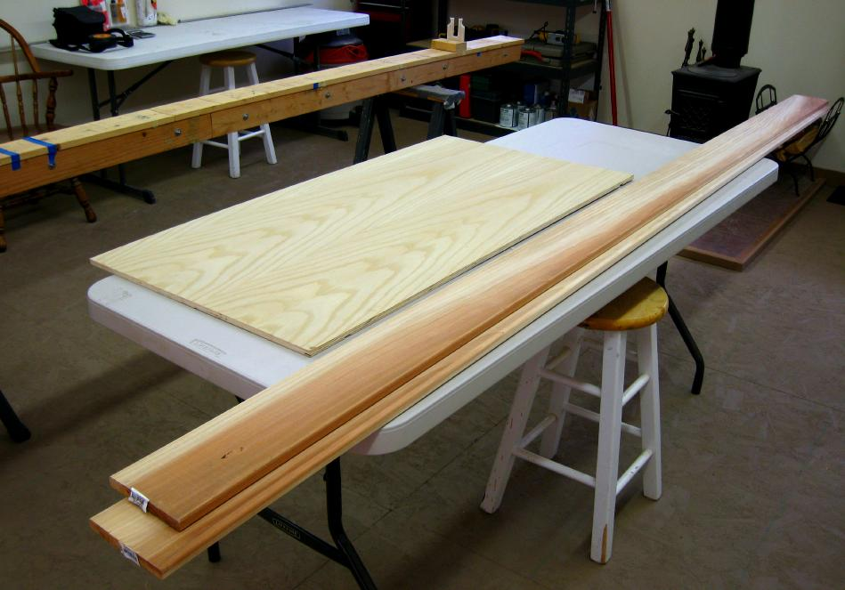

| Wood | Menu Previous Page Next Page |
|

Stringers - The Sea Bee stringers are redwood, and the Nikumi and Sea Rider's are Western Red Cedar (WRC) . Find clear boards( no knots) that are straight if possible, and with no twists or bends. Full length stringers are recommended, but shorter boards can be scarfed or butted / plated. The floor can be the same wood as the stringer, with solid sections, or cut into narrow slats. Stringers can be varnished or oiled.
Cross Sections - 1/2" Marine or exterior grade plywood is recommended for cross sections, stem plates. and coamings ( 3/16" - 1/4"lip). Plywood can also be used for the floor. Sealing all plywood with a coating of epoxy resin is recommended. |
|